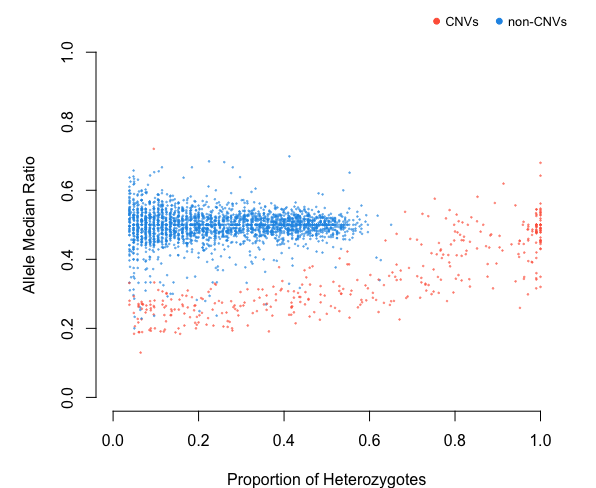

rCNV: An R package for detecting copy number variants from SNPs data
Piyal Karunarathne, Qiujie Zhou, Klaus Schliep, and Pascal Milesi
rCNV was designed to identify duplicates (CNV) from SNPs data with ease.

For a comprehensive tutorial on the package, go to https://piyalkarum.github.io/rCNV/ and navigate to “Get started” where all the functions and usage are explained with ample examples.
Installation
- CRAN link https://cran.r-project.org/package=rCNV
install.packages("rCNV")- You can install the development version of rCNV from GitHub with:
if (!requireNamespace("devtools", quietly = TRUE))
install.packages("devtools")
devtools::install_github("piyalkarum/rCNV", build_vignettes = TRUE)Please don’t forget to cite us if you use the package.